10g (9.0.4)
Part Number B10270-01
Library |
Contents |
Index |
| Oracle Discoverer Administrator Administration Guide (Online Help) 10g (9.0.4) Part Number B10270-01 |
|
This chapter explains how to implement and maintain hierarchies using Discoverer Administrator, and contains the following topics:
Hierarchies are default drill paths between items that you define in Discoverer Administrator. You create hierarchies between items in a business area to provide Discoverer end users with a default drill hierarchy.
There are two kinds of hierarchy:
Discoverer end users can use hierarchies to:
Hierarchies can link items in a business area where no relationship is defined in the database. For more information about business areas, see Chapter 4, "What are business areas?".
Item hierarchies are relationships between items other than dates.
An example of an item hierarchy:
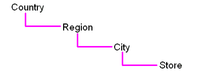
The Sales item hierarchy links a country with its regions, cities and stores.
To use this hierarchy a Discoverer end user could use a report that shows sales from a country perspective. The Discoverer end user could then drill down from country to see sales per region, sales per city or sales per store, and then drill back up to the country level.
The Sales item hierarchy from a Discoverer end user perspective is shown below.
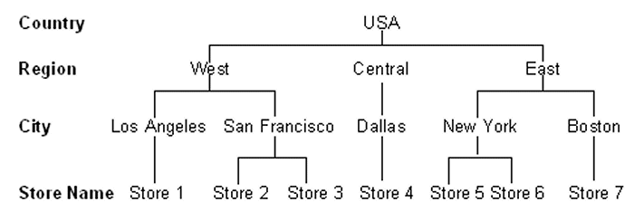
The figure below shows the Sales item hierarchy from a database perspective.
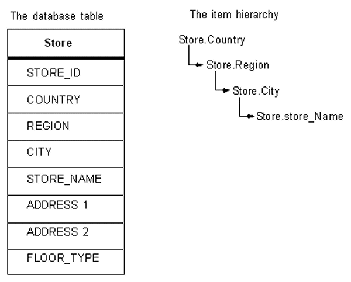
Note that you do not have to specify that Los Angeles is in the West. You only have to specify that City is under Region in your item hierarchy.
Date hierarchies are relationships between date items.
An example of a date hierarchy:
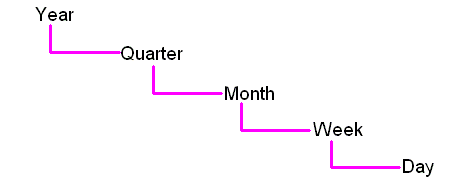
The Sales date hierarchy links a year with its quarters, months, weeks and days.
To use this hierarchy a Discoverer end user could use a report that shows total sales for each year. The Discoverer end user could then drill down from year to show sales per quarter, sales per month, sales per week and the sales per day, and then drill back up to sales per year.
A section of the Sales date hierarchy from a Discoverer end user perspective is shown below.
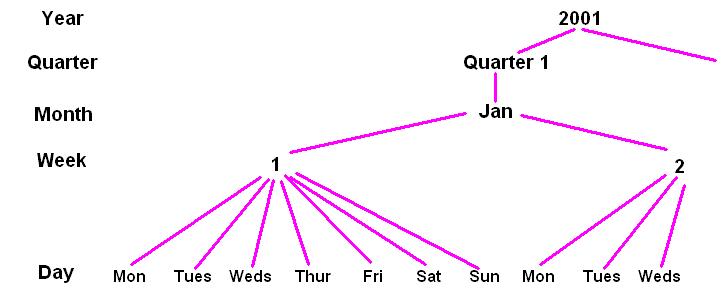
The figure below shows the Sales date hierarchy from a database perspective.
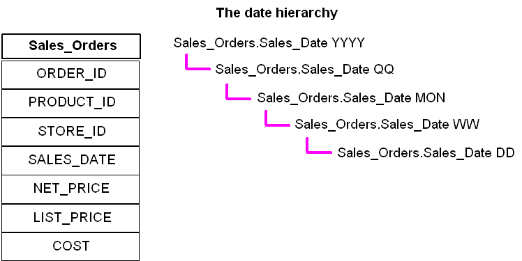
Note: Each level in the date hierarchy is a calculation based on the Sales_Orders.SALES_DATE column. The calculations are produced by a date hierarchy template (for more information, see "What are date hierarchy templates?").
Date hierarchy templates enable you to define a date hierarchy that you can apply to date items. A date item uses information that specifies the date, month, year and time. Discoverer uses this information to calculate for example, quarter, week and days of the week. A date hierarchy template automatically creates items based on a date item, for example to represent the year or month
You will find it more efficient to re-use a date hierarchy template by applying it to date items rather than redefining the same date hierarchy repeatedly for each date item.
You can use the date hierarchy templates (supplied with Discoverer Administrator) to define many common date hierarchies, or you can create your own customized date hierarchies.
Discoverer Administrator includes a default date hierarchy template (see the Date hierarchy template figure below) that enables you to drill from year to quarter to month to day:
If you apply a date hierarchy to a date item from an indexed table, a query that includes one of these date items will not use the indexes (which can reduce performance). You can optimize performance in Discoverer Plus by applying date hierarchies to date items from tables that do not rely on indexes.
When you load a large fact table (i.e. a table with many rows) that contains a date column (e.g. transaction_date) Discoverer applies the default date hierarchy to the date item (for more information, see "Load Wizard: Step 4 dialog").
Discoverer creates a folder containing date items such as Year, Quarter and Month using the EUL_DATE_TRUNC function (for more information, see Chapter 8, "About truncating date items and the EUL_DATE_TRUNC function"). When a Discoverer end user runs queries that include these items, any indexes that include the date item in the fact table are not used. Where indexes are not used, performance can be affected.
It is recommended therefore that you do not apply date hierarchies to date items in folders based on fact tables, as fact tables are likely to have indexes.
To retain performance you should apply date hierarchies to a separate dimension table.
For example, a transaction_date item in a fact table might join to another dimension table (e.g. Time Period) that specifies time periods. You can load this dimension table using the Load Wizard and apply date hierarchies to it. You can then create a complex folder containing items from both the dimension and fact tables, including the items created by the date hierarchy such as Year or Quarter. When a Discoverer end user uses queries that include date hierarchy items Discoverer can use the date column indexes on the fact table. This can considerably improve performance.
To create an item hierarchy:
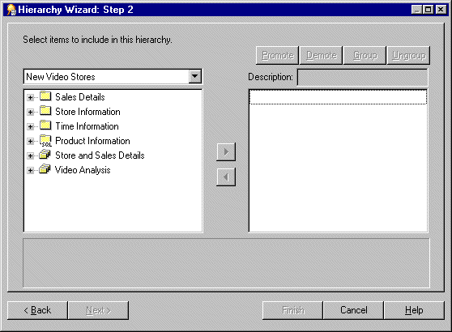
Here you select which items to use in this item hierarchy.
You can select more than one item at a time by holding down the Ctrl key and clicking another item.
Note: The order of items in the hierarchy list determines the drill down sequence that the Discoverer end user will use to analyze the data. The item hierarchy is arranged in the order that you include the items. For example, Region - City - Store.
Note: You can select items from multiple folders but the folders must be joined. If the folders are joined with more than one join, Discoverer will prompt you with the Choose Join dialog to select the correct join to use.
You can select more than one item at a time by holding down the Ctrl key and clicking another item.
Note: To ungroup a group of items in the hierarchy, select the group and click Ungroup.
The description you specify is the label the user sees in Discoverer Plus. If you don't specify a name, by default each level of the item hierarchy uses the item name.
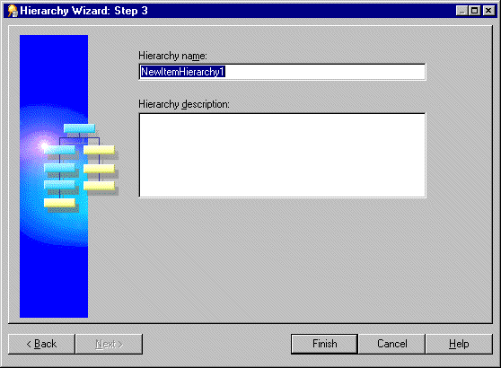
Discoverer displays the item hierarchy in the Hierarchies tab of the Workarea.
Note: You can create date hierarchies only if you use an Oracle database.
To create a date hierarchy:
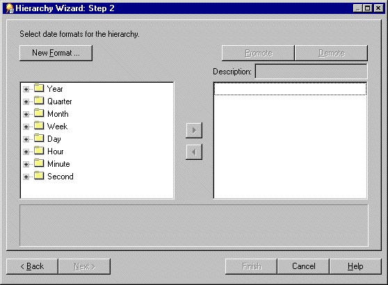
You can select more than one date format at a time by holding down the Ctrl key and clicking another date format.
The description you specify is the label the user sees in Discoverer Plus.
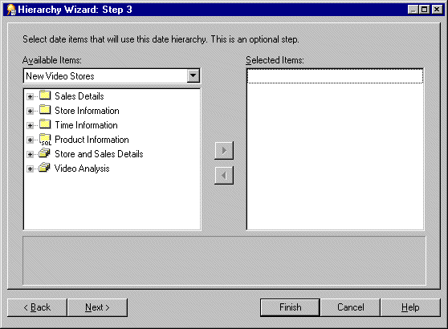
Here you select which date items will use this date hierarchy.
You can select more than one item at a time by holding down the Ctrl key and clicking another item.
Hint: To create just a date hierarchy template, do not select any date items on this page. Later, you can apply this template to date items by modifying their item properties (for more information, see "How to apply a date hierarchy template to a date item").
If you select the Set as default date hierarchy check box, the date hierarchy template is displayed as the default in the "Load Wizard: Step 4 dialog" in the drop down list under the Date hierarchies check box.
The date hierarchies and the date hierarchy template now appear on the "Workarea: Hierarchies tab".
To edit an existing item hierarchy:
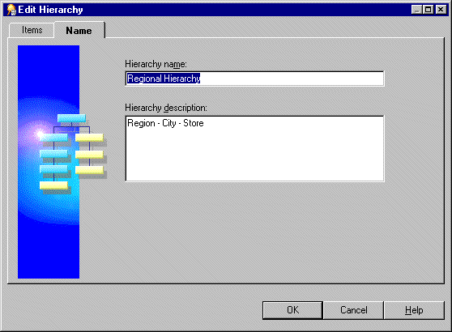
The Edit Hierarchy dialog is divided into two tabs.
Use this tab to add or remove the items that use this hierarchy.
Use this tab to edit the hierarchy's name and description.
For more information about the above tabs see "Edit Hierarchy dialog: Items tab" or "Edit Hierarchy dialog: Name tab".
This section describes how to edit an existing date hierarchy template. When you edit a date hierarchy template, all date items that use the date hierarchy template are modified to reflect the changes.
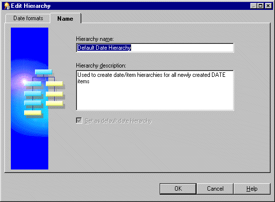
The Edit Hierarchy dialog is divided in to two tabs:
Use this tab to change the date formats and their position in this date hierarchy template.
Use this tab to edit the date hierarchy template's name and description.
For more information about the above tabs see "Edit Hierarchy dialog: Date formats tab" or "Edit Hierarchy dialog: Name tab".
This section describes how to apply a date hierarchy template to an existing date item.
When you apply a date hierarchy template to an existing date item, Discoverer Administrator automatically creates all the date items that are required to complete the date hierarchy. These new date items appear in the same folder as the original date item (prefixed with the name of the original date item). If you change the date hierarchy template that is applied to a date item, Discoverer creates new date items to reflect the new date hierarchy template. However Discoverer does not remove the date items from the previous date hierarchy. If you want to remove date items from a previous date hierarchy you must remove them manually.
For example, if you create the date hierarchy YY/QQ/MM and assign it to the date item Transaction Date, Discoverer creates the following items in the folder:
If you then create a new date hierarchy WW/DD and assign it to Transaction Date, Discoverer creates the following additional items in the folder:
Discoverer does not delete the other three date items created previously.
To apply a date hierarchy template to a date item:
Hint: To apply a single date hierarchy template to more than one date item at a time, select all the date items before opening the Properties dialog. For more information, see Chapter 8, "How to edit item properties".
Select None to make the date item not use a date hierarchy template.
The default date hierarchy template is displayed as the default selection in the Load Wizard step 4 in the Date hierarchies, using: drop down list. For more information see "Load Wizard: Step 4 dialog".
To set the default date hierarchy template:
To delete item hierarchies or date hierarchy templates:
You can select more than one hierarchy at a time by holding down the Ctrl key and clicking another hierarchy.

The Impact dialog enables you to review the other EUL objects that might be affected when you delete a hierarchy or hierarchy template.
Note: The Impact dialog does not show the impact on workbooks saved to the file system (i.e. in .dis files).
After upgrading to Oracle Discoverer Administrator, if a date format in a default date hierarchy uses the date format 'RR' you must modify it to 'YYYY' and then remove any affected date items (i.e. date items that use the 'RR' date format) from the business area. This action is necessary to ensure that materialized views can be successfully created (for more information about materialized views, see Chapter 13, "What are materialized views?").
To modify a default date hierarchy that uses the date format 'RR' so that it uses 'YYYY' you must complete the following tasks:
To modify a default date hierarchy to use the date format 'YYYY':
Note: Repeat the above steps for each affected default date hierarchy.
Once you have applied the 'YYYY' format to the affected default date hierarchy, you can remove remaining date items that use the date format 'RR'.
To remove date items that use the date format 'RR':
A database table might contain a recursive hierarchy, that is where a relationship exists between different records in one table. This form of hierarchy is not unlike a series of self joins and it cannot be used directly by Discoverer (sometimes described as a value hierarchy). However, you can make Discoverer use a recursive hierarchy if you create a custom folder and use the CONNECT BY clause.
For example, if you look at the emp table in the Scott schema (supplied with Oracle databases), some of the numbers appear in both of the columns empno and mgr. The numbers appear in both columns because an employee's manager is identified by the employee number. This illustrates how a recursive hierarchy exists in the emp table.
The table below illustrates the relationships that exist between rows in the columns empno, ename and mgr from the emp table.
Discoverer cannot create a hierarchy directly using the above table. However, you can create a hierarchy from this table if you first use the CONNECT BY clause of the SELECT statement to create a custom folder. You can then use the custom folder as the basis of a hierarchy that Discoverer can use.
To create a hierarchy in Discoverer that uses the information in the above table, you would need a table that is similar to the following table that Discoverer might use to create a hierarchy:
| TOP_LEVEL | 2nd_LEVEL | Nth_LEVEL | EMPNO | ENAME |
|---|---|---|---|---|
|
KING |
CLARK |
|
7934 |
MILLER |
The above table displays the name of an employee (ename) and all the managers for that employee. In this table Miller has two levels of manager, his immediate manager being Clark.
To create a table like the one above (i.e. based on columns from the emp table) and subsequently create a hierarchy between the levels, complete the following task:
You might want to create a hierarchy based on values in a table (e.g. the emp table in the scott schema). Discoverer Plus users will be able to create workbooks and use this hierarchy to drill up and down between the different levels of employees.
To create a hierarchy, with a custom folder and the CONNECT BY clause, using the emp table from the scott schema:
SELECT DISTINCT empno, mgr, level FROM scott.emp CONNECT BY mgr = PRIOR empno START WITH mgr IS NULL
The above SQL statement creates a table that contains the following result set:
| EMPNO | MGR | LEVEL |
|---|---|---|
|
7369 |
7902 |
4 |
|
7499 |
7698 |
3 |
|
7521 |
7698 |
3 |
|
7566 |
7839 |
2 |
|
7654 |
7698 |
3 |
|
7698 |
7839 |
2 |
|
7782 |
7839 |
2 |
|
7788 |
7566 |
3 |
|
7839 |
|
1 |
|
7844 |
7698 |
3 |
|
7876 |
7788 |
4 |
|
7900 |
7698 |
3 |
|
7902 |
7566 |
3 |
Note the following points about the SQL statement in the custom folder you created in the above step:
For more information about the CONNECT BY statement, refer to the Oracle 8i SQL Reference, Volume 2.
This makes sure that end users cannot access this custom folder.
Note: Although the Level column provides the information needed to create a hierarchy, you first need to separate the rows by Level. You achieve this by creating a complex folder for each level.
In this example, you create four complex folders.
Hint: To create each complex folder, drag all three items (i.e. Empno, Mgr and Level) from the custom folder Recursive Hierarchy into each new complex folder in turn.
Hint: For example, the condition you apply to the complex folder containing data at level 3 is:
Level = 3.
Hint: Use the empno and mgr items to do this. Create a join between the complex folder for Level1 and the folder for Level2 as follows:
Level1.empno = Level2.mgr.
Follow the above rule for joining the Level2 folder to the Level3 folder and the Level3 folder to the Level4 folder. These joins reflect the hierarchy you want to create.
Note: This is the complex folder that end users will see.
Hint: For each Empno item that you drag from one of the folders Level1, Level2, Level3 and Level4 you must rename each appropriately (e.g. Empno1, Empno2 Empno3, Empno4).
This gives you the following result set that Discoverer can use to build a hierarchy:
| Empno1 | Empno2 | Empno3 | Empno4 |
|---|---|---|---|
|
7839 |
7698 |
7499 |
|
|
7839 |
7698 |
7521 |
|
|
7839 |
7698 |
7654 |
|
|
7839 |
7698 |
7788 |
|
|
7839 |
7698 |
7844 |
|
|
7839 |
7782 |
7900 |
|
|
7839 |
7566 |
7902 |
7369 |
Discoverer Plus users will be able to create workbooks and use this hierarchy to drill up and down between the different levels of employees.
|
|
 Copyright © 2003 Oracle Corporation. All Rights Reserved. |
|